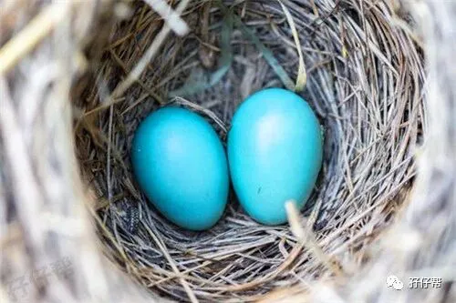

1
1
1
最近是不是有一个综艺节目很火啊？就是那个芒果台的《妻子的浪漫旅行》，我反正没有看过。
只是今天不小心在厕所刷微博的时候看到了（自从有了圆圈兄弟，我最喜欢待的地方就是厕所）
记得当时追《千山暮雪》时，非常纳闷刘恺威怎么会喜欢上那个胖乎乎的女猪脚。
讲真，我对颖儿不感冒。
今天才发现她原来有两个孩子，在怀孕前三个月，逞能拍戏大出血导致痛失其中一个宝宝，作为母亲的颖儿应该比谁都心痛吧。
心疼她！本应是个幸福的双胞胎妈妈。
前段时间，孖仔帮孕期群里有一宝妈也是遭遇其中一个宝宝胎停，当时已经是孕8周了，再熬一熬就可以进入孕中期了，真可惜啊。
看着她默默退出了双胎孕期群，我心里感慨万千。
我们双胎妈妈是上帝的宠儿，上辈子积德太多，好不容易同时被两个小天使砸中。
可是却突然被其中一个小天使嫌弃而中途退出，这种空欢喜一场的心情实在让人难以接受。
明明会有两个宝宝的，却无缘无故失去了一个，内心的不甘比肉体上的疼痛更加难以释怀。
我安慰她，物竞天择，优胜略汰。
希望失去其中一个宝宝的她可以坚强起来，Anyway，还有一个宝宝正在努力成长发育中…为了自己，也为了同样失去手足的另一个宝宝…
1
2
1
虽然圆圈妈的双胎孕期一路过关斩将，有惊无险地熬过来了，但也承受着莫大的心理压力和无以言表的恐慌。
这种心情只可意会不可言传，只有亲身经历过的人才知道个中滋味。
记得那时候，我的心态非常悲观，已经做了最坏的打算，要是发现有双胎输血综合征，只要有机会保住其中一个，我也愿意。
比起两个“全军覆没”，我还是希望保一个是一个，虽然手心手背都是肉。
选择，让人性更赤裸…
比“只能保一个”和 “两个全军覆没”更惨的是超早产儿。
经常从新闻上看到双胎早产儿的消息，图片上那两个小宝宝透明的身体，血管清晰可见，让人不忍直视。
这样的小宝宝，如果我是他们的妈，我选择放弃。昂贵的治疗护理费用不说，即便熬过来出院了，还要面临很多出生缺陷，器官发育不良等各种问题。
圆圈几乎是足月生的（35周+）评分10分，这种情况下都要被送去新生儿科观察，看着他们全身被插满管子，接受各种创伤性的治疗，我的心理承受着巨大的煎熬。
双胎妊娠属于高危妊娠，出现并发症风险比一般妊娠风险高很多，孕早期易流产，孕后期易早产。
我们不是大明星，只是普通的双胎妈妈！作为一个准妈咪，要时刻把胎宝宝的健康发育放在第一位。
颖儿为了所谓的敬业精神，还从事拍戏这样高强度的工作确实不应该鼓励。更何况明知道自己是双胎妊娠，更加要小心注意了。
颖儿再难过自责也挽救不了那失去的小生命，我们双胎妈妈应该引以为戒啊。
我在早孕期有孕酮低和先兆流产的迹象，虽然没有腹痛出血，但为了保险起见，我依然特意跟公司请假半个月卧床安胎。
双胎妈妈在孕期的工作问题，请记得万不可逞能。关于孕期和工作如何衡量，请参考孖仔帮前几期的推文《孕期上班？双胎妈妈不可忽略的【四个注意两个不要】》
孕早期是双胎流产的高峰期，要倍加小心，注意事项请参考孖仔帮前几期的推文《经验分享|双胞胎妈妈如何顺利度过早孕期》
1
3
1
相信每个孕妈妈在孕前跟颖儿一样，没孩子之前，都是天不怕地不怕的， 有孩子之后，变得特别惜命，特别怕死。
的确，经历过生孩子这一轮生死浩劫之后，我对生命有了更深一层的认识。
孕前，我活在与圆圈爸的二人世界里，没心没肺，熬夜看剧，吃遍大街小巷，感冒生病也是不了了之。
当妈之后，看着嗷嗷待哺的圆圈兄弟，我一直告诫自己，除了死，什么事都可以发生。
我不能忍受圆圈对着别的女人喊“妈妈！”更不能忍受圆圈在没有母爱的环境下成长为一个冷血无情的人。
人生苦短，我倍加珍惜我和圆圈兄弟在一起的每一分每一秒，哪怕是没日没夜的喂奶，换尿布，陪玩，陪睡，陪聊…
而这个前提就是，我必须身体健康，生龙活虎地活着。
女子本弱，为母则刚！
因此，尚在孕期的双胎妈妈心态摆正，放宽心才是最重要的，与其整天林黛玉般胡思乱想，不如想方设法给胎宝宝们做胎教，唱唱歌，哼哼小曲，免得被产前忧郁症盯上了。
已经卸货的双胎妈妈，更不必因奶粉尿不湿的经济压力而发愁，还有那些夫妻关系，婆媳关系等鸡毛蒜皮的事情，也不配让你因此郁郁寡欢。
你完全可以因为两个小宝宝的到来把小日子过得更充实，更有意义。
有双胎孕期育儿问题，欢迎找圆圈妈来吐槽呗！关注孖仔帮，与您分享双胎育儿的囧人囧事。
1
END
1
本文系圆圈妈V-新sgguy-com原创，来源于孖仔帮，专注双胞胎孕期育儿经验分享，著作权归孖仔帮所有。
各位双胎妈妈，更多孖仔帮原创育儿文章请猛戳 "阅读原文" ，或者直接上圆圈妈的个人博客，大把双胎孕期育儿心得经验分享。

